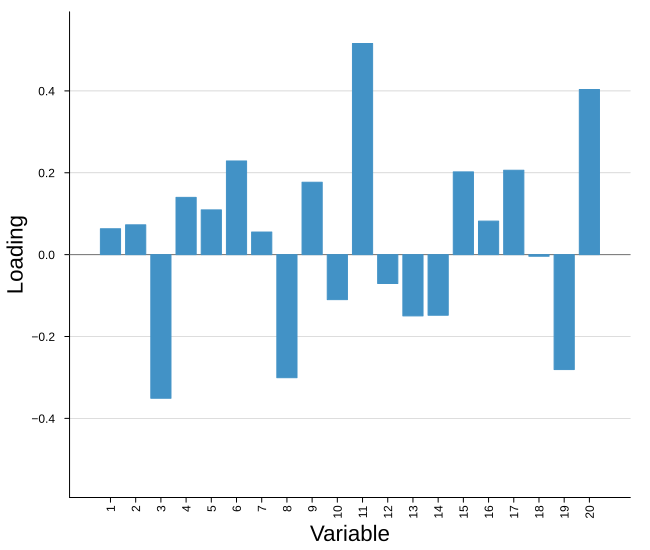
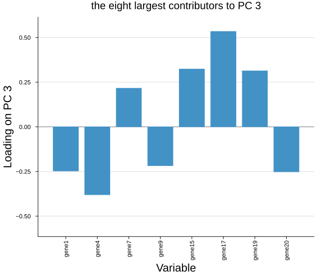
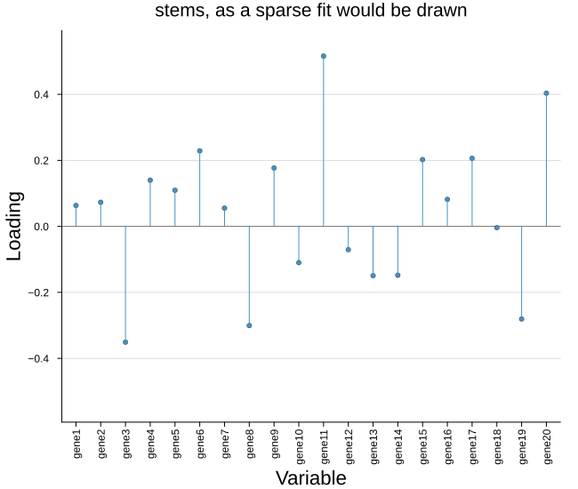
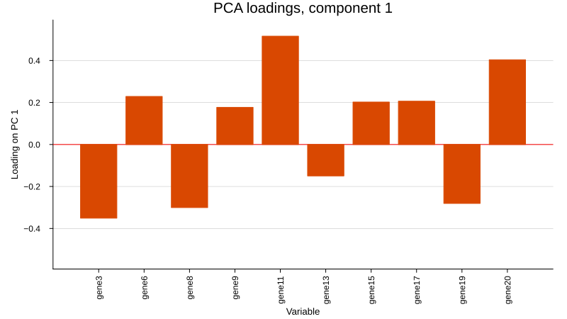

Loadings plot
Where the scores plot shows the observations, the loadings plot shows the variables: how much each one contributes to a single component. Each variable gets a bar drawn from a line at zero, so the sign and the magnitude both read at a glance.
plot_loadings(loadings; comp = 1, varnames = ..., ntop = ..., nonzero = ..., kwargs...)It takes a loadings matrix with variables in rows and components in columns. Every model in BigRiverEssence stores one in that layout already, so nothing needs transposing:
| Model | Call |
|---|---|
pca | plot_loadings(m.loadings; ntop = 20) |
plskern | plot_loadings(m.P; ntop = 20) |
plsda | plot_loadings(m.loadings_X; ntop = 20) |
cca | plot_loadings(m.xproj) |
spc | plot_loadings(m.loadings; nonzero = true, style = :sticks) |
splsda | plot_loadings(m.loadings_X; nonzero = true, style = :sticks) |
scca | plot_loadings(m.u; nonzero = true, style = :sticks) |
pmd | plot_loadings(m.v; nonzero = true, style = :sticks) |
jive | plot_loadings(m.U[i]) |
The two-block models draw their Y side the same way, from m.loadings_Y, m.yproj or m.v.
Setup
using BigRiverEssence
using BigRiverPlots
using Plots
using StableRNGsA simulated example
We use the same data as the scores notebook, so the two sets of figures describe one fit from both sides. Three latent signals drive twenty variables, plus a little noise — so we expect a handful of variables to carry most of the weight on each component and the rest to sit near zero.
We also name the variables here. Names matter more for this plot than for the scores, since the variable axis is what we read.
rng = StableRNG(20240801)
n = 90 # observations
p = 20 # variables
latent = randn(rng, n, 3)
X = latent * randn(rng, 3, p) .+ 0.3 .* randn(rng, n, p)
# names for the variable axis
vnames = ["gene$(i)" for i in 1:p]
m = pca(X; k = 5)
size(m.loadings) # variables by components(20, 5)The default plot
Given nothing but the loadings, we get the first component, every variable in its original order, ticked by index, with a line at zero separating the positive contributions from the negative.
plot_loadings(m.loadings)
Modifying the plot
Three arguments change which loadings we draw — comp, ntop and nonzero — and are applied before the plot is built. Everything else changes how it looks: style for bars against sticks, two color knobs, and the whole standard Plots vocabulary.
Choosing what to draw
comp picks the component — the first is drawn by default. varnames names the variables; we pass them as an argument rather than setting xticks, because they are subset along with the loadings, so whichever variables survive keep their correct names. ntop keeps only the variables with the largest absolute loading — the ones actually driving the component — leaving them in their original order rather than sorting them.
Over many variables ntop is what keeps the axis legible, and it is what we reach for with the dense models. The axis label does not follow comp, so when we move off the first component we say so ourselves.
plot_loadings(m.loadings;
comp = 3,
varnames = vnames,
ntop = 8,
ylabel = "Loading on PC 3",
title = "the eight largest contributors to PC 3")
The sparse models
Models with an L1 penalty (spc, pmd, splsda, scca) push most loadings to exactly zero. Drawing all of them wastes the axis on empty bars, so nonzero keeps only the variables that survived the penalty, and loadingsstyle = :sticks swaps the bars for stems — a stem reads sparsity better, putting the emphasis on the few variables present rather than on the width of each bar.
Our PCA is dense, so nonzero changes nothing here and the figure below is really just showing the stick style. On a sparse fit these two together are what make the plot readable.
plot_loadings(m.loadings;
varnames = vnames,
nonzero = true,
loadingsstyle = :sticks,
title = "stems, as a sparse fit would be drawn")
Colors and the rest
Two color knobs of our own: loadingscolor for the bars and origincolor for the line at zero, which defaults to a light shade so it reads as a reference rather than as data.
Everything the plot sets for itself is a default that yields to whatever we pass, so the full Plots vocabulary is available alongside them — title, fonts, canvas size, legend.
plot_loadings(m.loadings;
varnames = vnames,
ntop = 10,
loadingscolor = "#d94801",
origincolor = :red,
ylabel = "Loading on PC 1",
title = "PCA loadings, component 1",
size = (800, 450),
left_margin = (5,:mm),
bottom_margin = (5,:mm),
guidefontsize = 9,
legend = false)